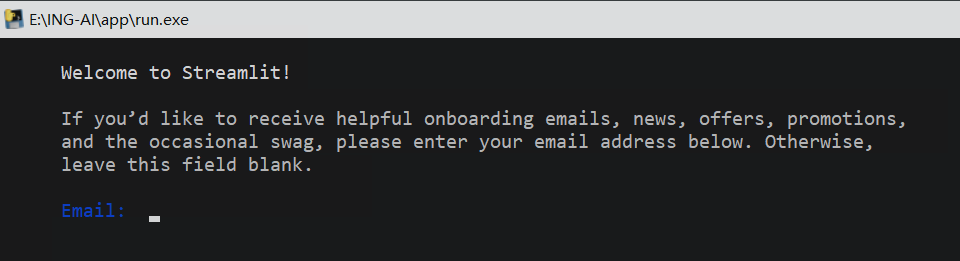
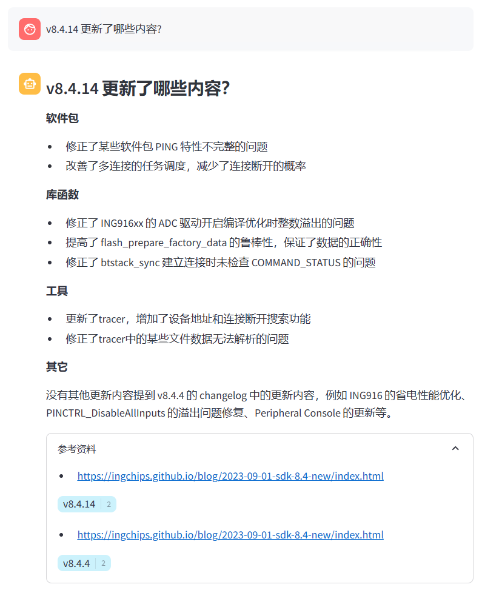
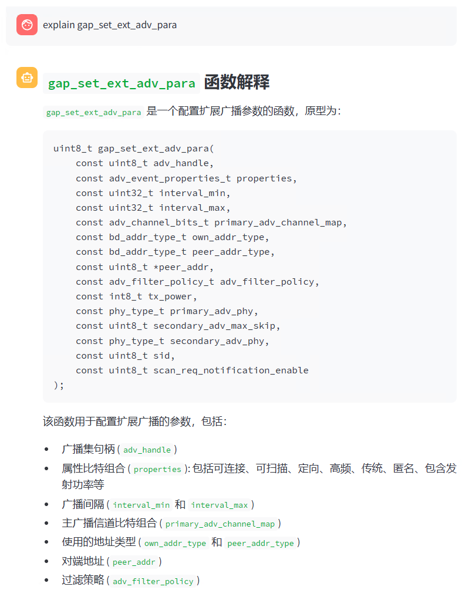

基于检索增强生成（RAG）和大语言模型技术的 AI 助手可为开发者解答一些常规问题。
功能特点
- “知道”（可检索）本网站的所有内容，包含所有开发者文档和应用手册；
- “知道”（可检索）SDK 里的 1000+ API；
- 可用中文或英文提问，得到中文解答。

安装
安装前请确认运行环境符合要求：
- Windows 10 及以上的 x64 版本；
- 最少 8GB 内存，建议 16GB 以上
声明: 语言模型通过学习大量的文本来生成内容，无法理解、表达观点，也无法进行价值判断，
它所输出的任何内容都不代表我们或者模型开发者的观点和立场。用户在使用模型生成的内容时，应自行负责对其进行评估和验证。
请充分了解此信息，然后下载、安装本程序。
下载或者克隆这个仓库。
运行
运行 app/run.exe。
初次运行时，程序会自动下载所需要的几个大语言模型。总大小约 13GB，请等待下载完成。 本助手使用了 Streamlit，初次运行时会要求填写 E-mail 地址，无需填写直接回车即可：

在启动页面可根据运行环境选择不同的模型设置。
答案后面附带了对应的参考资料，方便开发者进一步了解：

可用中文或英文提问。对于英文资料，也会用中文回答。答案倾向于使用 Markdown 排版：

本助手只支持单人使用，不可作为支持多人对话的服务器。
局限性
- 不支持 GPU 加速；
- 对于某些问题，可能无法检索到正确的资料；
- 大模型存在幻觉问题。